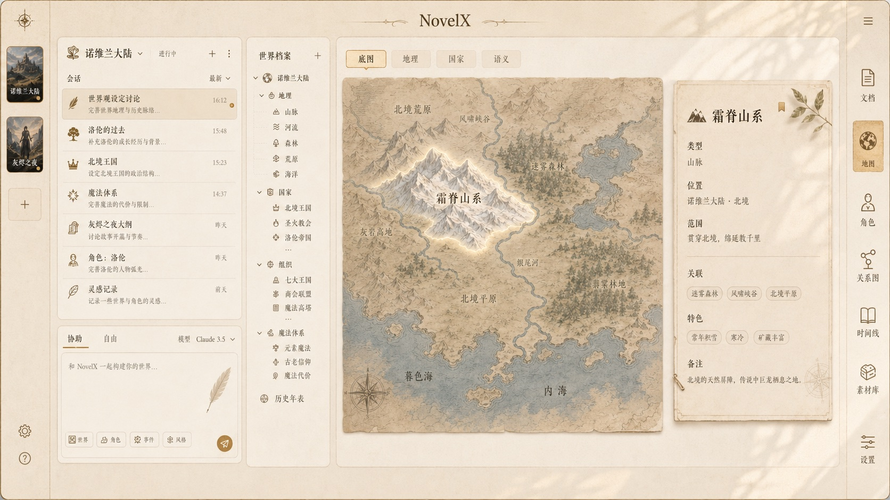
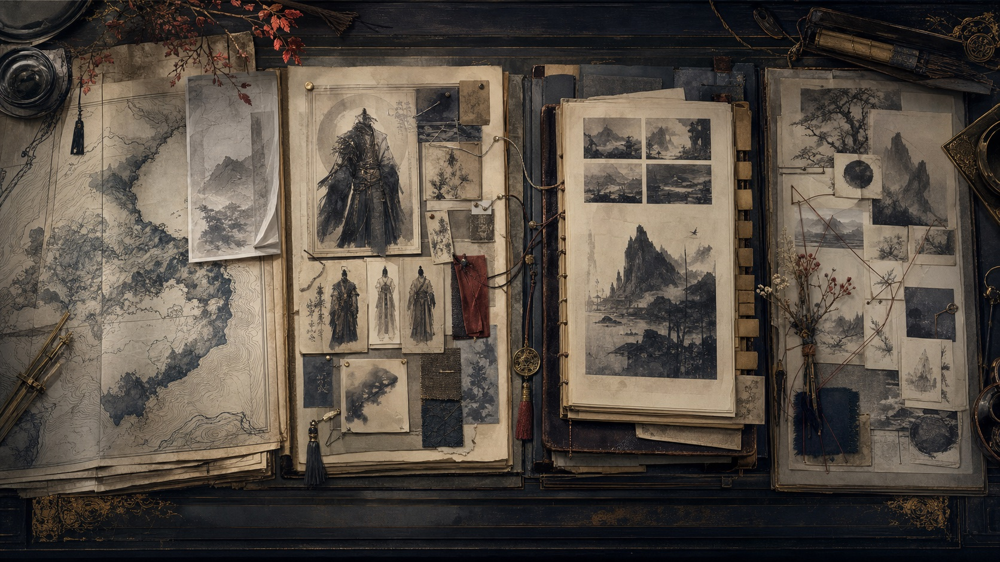

NovelX 诺文
让一次灵感，
生长为一个世界。
不是一次回答，而是一套持续生长、可检查、可编辑、可恢复的创作工程。
从一句目标，到一组可确认的改动。
Agent 读取项目、组织任务、提出候选，再由创作者决定哪些内容进入作品。
- 提出目标 从创作意图开始，不从空白表单开始。
- 检索项目 读取相关世界、角色、文档与来源。
- 审阅候选 把建议组织为可检查的候选改动。
- 进入作品 经确认后写入版本化的创作对象。

创作对象，不再散落在对话里。
世界、角色、故事与来源各自独立，又能通过关系和版本继续生长。

世界角色故事来源Canon关系版本
世界会沿因果生长。
一次地理选择，会继续改变气候、国家、角色与事件。
让故事的每一层， 在同一作品中出现。
正文、图片、角色与关系彼此引用，也都保留自己的来源与版本。
- 正文
- 图片
- 角色
- 关系